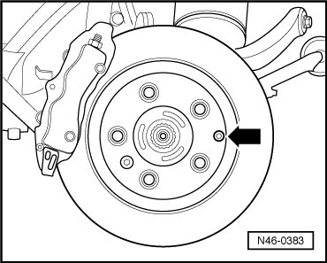
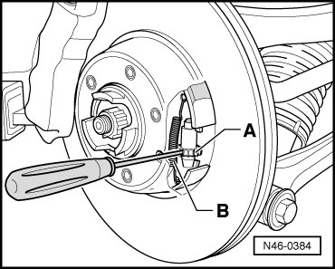

17" (1KQ) Caliper
Brake Shoes
Special tools, testers and auxiliary items required
• Bracket with spindle and hook (3438)
• Socket XZN 16 (T10198)
Removing
- Remove wheels and tires.
- Remove brake pads. Refer to --> [ Brake Pads ] Brake Pads.
- Remove wheel speed sensor wire out of bracket at brake caliper.
- Remove the brake caliper bolts.
- Remove brake caliper housing and secure with wire so that the weight of the brake caliper does not burden or damage the brake hose.
- Remove bolt - arrow - for adjustment nut of parking brake.

Set Back Park Brake
- Turn adjustment nut - A - against resistance from pull spring - B -.

- Remove brake disc.
- Unhook pull springs.
- Remove spring dowel sleeves with compression springs and remove brake shoes.
Installing
Installation is performed in the reverse order of removal.
- Adjust the park brake. Refer to --> [ Park Brake Adjusting ] Procedures.